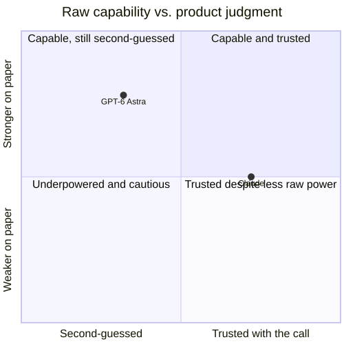

1 — When output becomes the metric
A Meta engineer built an internal leaderboard ranking 85,000 employees by AI token spend. It had a nickname: "Claudeonomics." Shopify, Microsoft and a lot of top companies have done the same.
Tokenmaxxing is real, it's dated, and it's documented well beyond a few awkward internal tools. Meta's own numbers show 60.2 trillion non-Llama tokens burned company-wide in 30 days — north of $900M if you priced it at retail. Microsoft has run a similar leaderboard since January 2026. Salesforce has publicly displayed minimum AI-spend targets for teams. None of these companies set out to reward volume for its own sake. Token spend is just the number that's already sitting in a billing dashboard, ready to be sorted and ranked, while "did this actually help" requires someone to go and look. Leadership tend to reach for the metric that is already instrumented, and easy to measure. You get what you measure.
Once tokens spent, PRs merged, or lines of code shipped become the number leadership watches, people optimize the number. Duplication goes up, share of commits doing genuine refactoring goes down and total volume goes up. The craft that keeps volume maintainable went down.

The loop closes on itself. The board keeps climbing even as the thing the board was supposed to represent gets worse.
AI makes the writing step nearly free, so more code shows up for review. Review capacity doesn't scale the same way — a senior engineer can only hold so much context in a day — so the bottleneck just moves downstream, from "can we write this" to "can anyone actually verify it."
The same gap shows up one layer up, in how we choose the model, not just how we measure the humans using it. The more capable model on paper isn't automatically better for the outcome. Capability and judgment are different axes, and a leaderboard only ever measures one of them.

Every.to's reviewers reached for Astra for writing and prototypes, and kept reaching for Fable 5.1 for anything with real product stakes.
"Outcomes over outputs" isn't a new insight either. It traces back well before any of this AI-fueled urgency existed. What's changed is who's saying it and why: it's being re-badged by vendors selling engineering-productivity telemetry, which is a reasonable thing to be skeptical of even when the underlying idea is sound. A vendor dashboard measuring "outcomes" is still a dashboard, and dashboards still get gamed.
What forces correction is not discipline. It's going to be the bill. Budgets are being set per employee and per agent now, and an autonomous scheduled agent burns tokens with nobody watching the leaderboard at all — it just runs, on a cron, at 3am, whether or not the work it produced that week was worth reviewing. A human at least feels the social pressure of a leaderboard. An agent has no such governor, and the org that scaled up autonomous agents fastest without scaling up review capacity to match is the org that gets the biggest bill and the least explanation for what it bought. When the spend line and the delivery-quality line start moving in opposite directions on the same finance report, someone above engineering notices, and the reckoning arrives whether or not the org was ready for it.
Next in this series: when to spend tokens on a model at all versus write a script once, what the hardware economics underneath the API price actually look like, what "efficient" AI is quietly costing somewhere else, and why tying your whole workflow to one vendor's rate limits is its own kind of risk. Turbulent water ahead. Get a good guide and a life jacket — usage limits are changing, stay flexible.